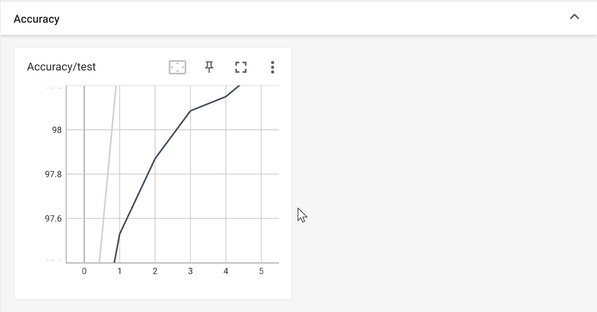
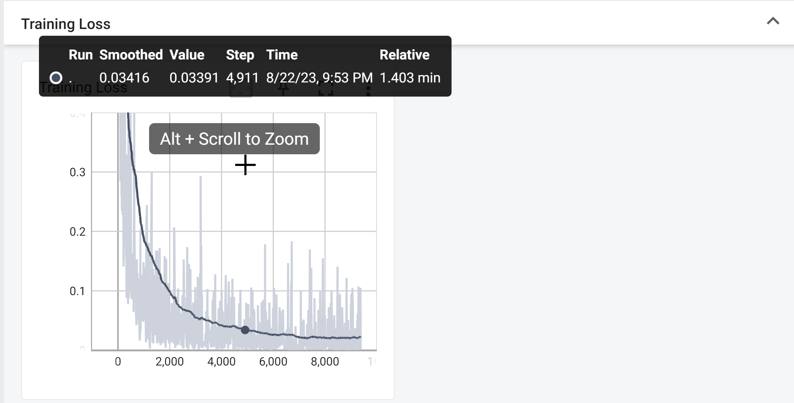
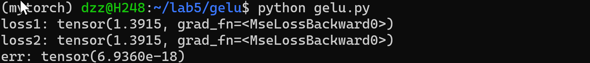
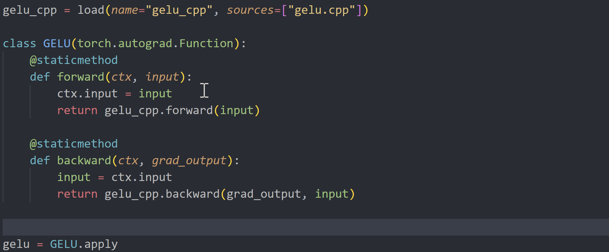
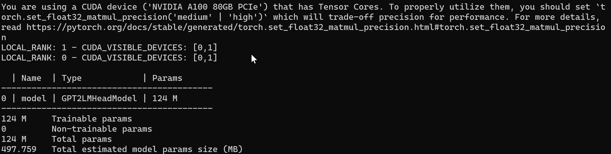

Lab-5 AI相关#
Lab Description#
- 使用
PyTorch实现最基本的卷积神经网络 LeNet-5，并在 MNIST 数据集上使用 GPU 进行训练，并对测试集进行测试。- 编写
GELU算子，并在 LeNet-5 中使用该算子，验证其正确性。- 你需要提交：
- 全部代码
- 实验报告，其中需要包含：
- 简要实验过程
- 贴上训练过程的 GPU 占用率截图（使用
nvidia-smi查看）- Tensorboard 模型的损失曲线、LeNet-5 的准确率曲线等截图
- 对于 LeNet-5，你需要写明测试集上的识别正确率
- 对于 Bonus，你需要写明训练时间、加速策略、加速效果
Introduction Knowledge(可以跳过不看)#
Lab Design & Test Result#
LeNet#
Environment#
本次实验我选择使用conda自己管理环境。使用salloc的方法在2080Ti上完成实验。
conda create -n mytorch python=3.10
conda activate mytorch
conda install pytorch torchvision tensorboard -c pytorch -c nvidia
# conda deactivate
Optimizer#
Adam 优化器会比SGD效率高很多，准确率也会高很多
Learing Rate#
通过实验记录我们可以看到如果学习率为0.002时反而测试结果不理想。最后选择0.001
GPU Occupation#
大约需要30s左右GPU占用达到峰值，大约维持在1098Mib。

Tensorboard#
使用ssh -L 16006:127.0.0.1:6006 dzz@clusters.zju.edu.cn -p 80，但是在H248上使用tensorboard，然后再在本地访问 http://127.0.0.1:16006/，既可以看到页面。


[Epoch 1, Batch 200] loss: 0.681
[Epoch 1, Batch 400] loss: 0.171
[Epoch 1, Batch 600] loss: 0.117
[Epoch 1, Batch 800] loss: 0.092
[Epoch 2, Batch 200] loss: 0.076
[Epoch 2, Batch 400] loss: 0.063
[Epoch 2, Batch 600] loss: 0.060
[Epoch 2, Batch 800] loss: 0.058
[Epoch 3, Batch 200] loss: 0.052
[Epoch 3, Batch 400] loss: 0.050
[Epoch 3, Batch 600] loss: 0.048
[Epoch 3, Batch 800] loss: 0.045
[Epoch 4, Batch 200] loss: 0.035
[Epoch 4, Batch 400] loss: 0.039
[Epoch 4, Batch 600] loss: 0.037
[Epoch 4, Batch 800] loss: 0.037
[Epoch 5, Batch 200] loss: 0.028
[Epoch 5, Batch 400] loss: 0.032
[Epoch 5, Batch 600] loss: 0.030
[Epoch 5, Batch 800] loss: 0.029
[Epoch 6, Batch 200] loss: 0.021
[Epoch 6, Batch 400] loss: 0.026
[Epoch 6, Batch 600] loss: 0.033
[Epoch 6, Batch 800] loss: 0.029
[Epoch 7, Batch 200] loss: 0.018
[Epoch 7, Batch 400] loss: 0.020
[Epoch 7, Batch 600] loss: 0.022
[Epoch 7, Batch 800] loss: 0.022
[Epoch 8, Batch 200] loss: 0.019
[Epoch 8, Batch 400] loss: 0.018
[Epoch 8, Batch 600] loss: 0.019
[Epoch 8, Batch 800] loss: 0.018
[Epoch 9, Batch 200] loss: 0.017
[Epoch 9, Batch 400] loss: 0.014
[Epoch 9, Batch 600] loss: 0.017
[Epoch 9, Batch 800] loss: 0.015
[Epoch 10, Batch 200] loss: 0.011
[Epoch 10, Batch 400] loss: 0.016
[Epoch 10, Batch 600] loss: 0.017
[Epoch 10, Batch 800] loss: 0.019
Accuracy on the test set: 99.02%
GELU#
Python#
import torch
import math
import torch.nn.functional as F
from torch.autograd import Function
class MyGELUFunction(Function):
@staticmethod
def forward(ctx, input):
output = input * 0.5 * (1 + torch.erf(input / math.sqrt(2)))
ctx.save_for_backward(input,output)
return output
@staticmethod
def backward(ctx, grad_output):
input, output = ctx.saved_tensors
grad_input = grad_output * (0.5 * (1 + torch.erf(input / math.sqrt(2))) + input * torch.exp(-(input)**2 / 2) / math.sqrt(2) / math.sqrt(math.pi))
return grad_input
（推导过程可以见 Introduction Knowledge）
实验结果：

由于浮点精度的问题，该误差可以忽略不记了。（已打印grad张量比较过）
C++#
同样的，我们阅读官网资料，通过正常的改写c++代码即可完成该模块。注：此处我使用的是JIT动态编译。
其中gelu.cpp内容如下：
#include <torch/torch.h>
torch::Tensor gelu_fwd(torch::Tensor input){
return input * torch::sigmoid(1.702*input);
}
torch::Tensor gelu_bwd(torch::Tensor grad_out, torch::Tensor input){
auto tmp = torch::sigmoid(1.702*input);
return grad_out * (tmp+1.702*input*tmp*(1.0-tmp));
}
PYBIND11_MODULE(TORCH_EXTENSION_NAME, m){
m.def("forward", &gelu_fwd, "GELU forward");
m.def("backward", &gelu_bwd, "GELU backward");
}


Bonus#
通过在基准代码上编写，实验基本结果如下（loss高的吓人）

多卡训练#
当我使用lightning重构多卡训练模型后，由于未知原因（？可能是0显卡未启用)导致训练时间明显变慢了


混合精度#

根据编译器的提示，我们更改代码：

Discussion#
通过本次学习，自己为了能有更夯实的基础，学习了经典的CS50课程，两届了神经网络的基本框架。通过对PyTorch官网资料的阅读，以及优化过程中对PyTorch-Lightning的使用，能够编写简单的神经网络，为自己未来的学习有启发性意义并打下良好基础。
其中对GELU算子的编写，也为我打开了MLSys的大门，了解了如何将c加载如python中（为了提升效率），希望自己未来能在这个感兴趣的领域有所研究。
ps：bonus部分由于个人时间原因（最近这段时间家中有些事情），有部分优化方法未完整使用，还请助教谅解。
Created: 2023年9月27日 10:52:36